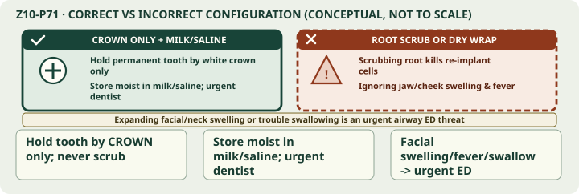

Z10-P71 · Wilderness medicine · New manuscript
Handle knocked-out teeth and facial dental emergencies conservatively
Preserve a knocked-out permanent tooth cleanly for rapid dental re-implantation while spotting dangerous facial infection swelling.
When it applies · Falls, paddle strikes, or biting hard food causing tooth avulsion, broken teeth, or sudden severe toothache with jaw/cheek swelling.
Equipment · Clean gauze, small clean container with milk/saline (or patient's own saliva if alert), and urgent dental/clinical contact.

Actions
- For a knocked-out permanent adult tooth, pick it up ONLY by the white biting crown—NEVER touch or scrub the delicate root—rinse briefly with clean water/saline ONLY if dirty, and store submerged in cold milk or sterile saline (do NOT store dry or scrub) while heading immediately to a dentist/ED.[M06, M20]
- Control gum socket bleeding by having an alert patient bite firmly on clean folded damp gauze, and save any broken tooth fragments cleanly without gluing anything back in the mouth.[M01, M06]
- Treat toothache accompanied by expanding cheek/jaw/neck swelling, fever, difficulty swallowing, or eye-area swelling as an urgent spreading deep-infection emergency requiring immediate clinical care (never wait days in camp).[M06, T02]
Failure recognition · Scrubbing the root of a knocked-out permanent tooth with soap and wrapping it dry in tissue paper, or ignoring jaw swelling and fever that threaten the airway.[M06, T02]
Verify · Confirm tooth handled by crown only in moist milk/saline, bleeding controlled with gauze, and any facial swelling/fever triggers urgent exit.[M06, T02]
Stop or change course · Spreading facial/neck swelling, fever, trouble swallowing/breathing, or severe uncontrolled oral bleeding requires immediate 911/emergency department care.[M06, T02]
Evidence and editorial notes
- M01 · American College of Surgeons · STOP THE BLEED Training Course (current web edition)
- Section: Ensure Your Own Safety; Find Life-Threatening Bleeding; Compress · Conditions: Lay responder encountering severe external hemorrhage
Support: Ensure scene safety first, call 911, expose the wound to locate life-threatening bleeding, and apply firm continuous direct pressure with clean gauze or cloth.
Limitations: Does not replace formal hands-on Stop the Bleed training or EMS trauma care. · Conflicting evidence: None across ACS/ARC guidelines.
Editorial note: Separates life-threatening arterial/venous hemorrhage from minor scrapes. · Specialist reviewer: Wilderness medicine and trauma EMS
Primary source · checked 2026-11-24 - M06 · NIH / MedlinePlus · Wounds and Injuries (current web edition)
- Section: Minor Wound Cleaning, Protection, and Infection Red Flags · Conditions: Superficial cuts, scrapes, and abrasions with potable water available
Support: Rinse minor wounds thoroughly with clean potable water, cover with a clean sterile dressing, and monitor for worsening redness, warmth, swelling, pus, red streaks, or fever.
Limitations: Deep punctures, animal bites, retained foreign bodies, or heavily contaminated wounds require clinical evaluation and tetanus review. · Conflicting evidence: None; separates clean potable rinsing from harsh chemical wound scrubbing.
Editorial note: Anchors field wound hygiene and infection escalation cards. · Specialist reviewer: Wilderness medicine and wound care
Primary source · checked 2026-11-24 - M20 · NIH / MedlinePlus · First Aid Overview (current web edition)
- Section: Lay First-Aid Scope, Kit Readiness, and Documentation · Conditions: Pre-trip kit preparation and remote patient monitoring
Support: Maintain an inspected, unexpired first-aid kit matched to your actual training, keep written patient observations (time, responsiveness, breathing, symptoms, interventions) for EMS handoff, and practice skills in certified courses.
Limitations: Carrying advanced medical instruments without clinical training adds risk rather than capability. · Conflicting evidence: None; aligns with ARC and NPS-K.
Editorial note: Anchors kit sizing, SOAP-style lay observation logs, and scope-of-practice cards. · Specialist reviewer: Wilderness EMS and clinical education
Primary source · checked 2026-11-24 - T02 · American Red Cross · First Aid Steps (current web edition)
- Section: First Aid Steps > Call 9-1-1 · Conditions: Lay emergency response to unresponsiveness, abnormal breathing or severe bleeding
Support: Activate EMS and get needed equipment. Follow dispatcher directions and act within training.
Limitations: Remote locations may delay EMS arrival, requiring sustained stabilization after activation. · Conflicting evidence: None; aligns with NPS-E.
Editorial note: Mandates early emergency activation and dispatcher adherence. · Specialist reviewer: EMS and wilderness medicine
Primary source · checked 2026-11-24
Source lineage · NIH MedlinePlus Wounds and First Aid; new manuscript · Classification · New manuscript.